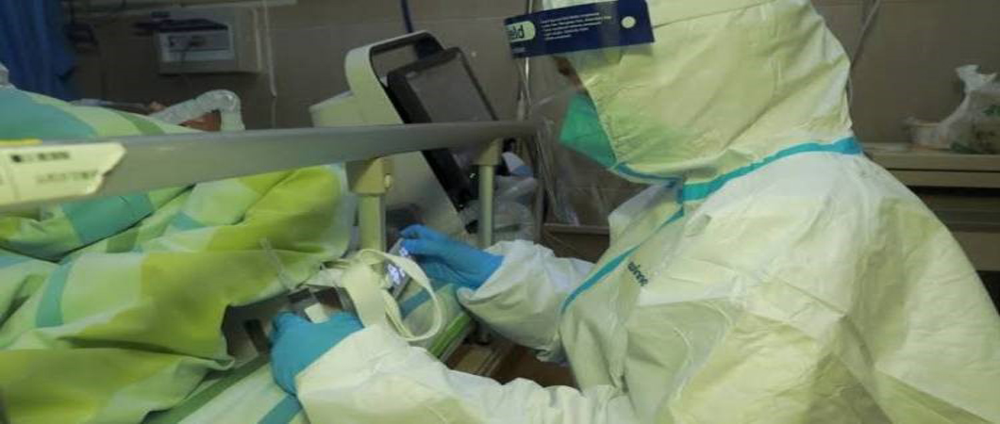

Treatment in Turkey
Turkey contains a large number of hospitals and huge medical complexes, in addition to plenty and distinctive Precision medicine, whether using robots or various medical mechanisms at reasonable costs.

Coronavirus in Turkey and the preventive measures - Learn about treatment services in Turkey
Corona information
Coronavirus is an infectious virus originates from an animal source. It began to appear in the Chinese city of Wuhan in December of the year 2019. The reason for this name is the shape that appears clearly in the electronic microscope device, similar to a crown, which is called Corona in the Latin language.
Table of Contents
- Corona information
- Coronavirus preventive measures
- Coronavirus signs & symptoms
- Coronavirus treatment
- The difference between corona and influenza
- Is Coronavirus present in Turkey?
- What are the preventive measures taken by the Turkish government to prevent corona?
- Medical Tourism and treatment in Turkey
- Hair Transplant in Turkey
- Dental Implants in Turkey
- Rhinoplasty in Turkey
- Weight loss and liposuction operations in Turkey
- The cost and prices of treatment in Turkey
- Ilajak Medical services
Coronavirus, known as COVID-19, can cause death if it turns to pneumonia, respiratory failure, or septic shock.
Coronavirus preventive measures
About how to prevent corona, the World Health Organization has identified some conditions that cause the transmission of this disease to others, as follows:
- When contacting with wild animals infected with the virus, or when dealing with the animals'
- By mouth droplets resulting from the patient's coughing or exhalation.
- By touching the affected person's hands or face.
- By touching things that people with this disease have touched, such as door handles.
Coronavirus signs & symptoms
Since this disease is mysterious, there are many studies and research carried out by the World Health Organization, to study the sign & symptoms and infection transmission mode that leads to it.
Corona usually causes some symptoms of fever, fatigue and dry cough, and some patients may also experience pain in the whole body, nasal congestion or runny nose, sore throat or diarrhea.
People suffering from high blood pressure, heart problems or diabetes remain more susceptible to infection with the Coronavirus.

Coronavirus treatment
Until now, no doctor in the world has succeeded in finding a cure for the Coronavirus, and the World Health Organization is still conducting research and studies to reduce this disease and working to find a vaccine to protect against this virus.
The difference between corona and influenza
There are many similarities between the two diseases, and the issue of identifying the differences between the Coronavirus and influenza is very difficult, especially since the symptoms of Corona we talked about above are very similar to the symptoms of the flu, but to confirm the type of infection, people must do a blood lab test, to see what kind of illness they feel.
In general, to know the difference between corona and influenza, severe symptoms appear on the coronavirus carrier, which is mild at first but intensifies in a short time.
Is Coronavirus present in Turkey?
The Turkish Minister of Health, Fahrettin Koca, has issued a series of warnings regarding Coronavirus disease. The Minister of Health said: "This virus has been announced in many countries such as Iran, Iraq, South Korea, and China, so they have taken the necessary measures by staying at home this period." Koca confirmed that there is no patient with the new Coronavirus in Turkey, saying: "We have not encountered any incidents indicating the presence of the Coronavirus in our country until now." He warned citizens not to travel abroad if it was not mandatory.
What are the preventive measures taken by the Turkish government to prevent corona?
To prevent the entry and spread of the Coronavirus on Turkish territory, the Turkish Ministry of Health holds meetings and strives to follow up on this virus and reduce its risk.
The Turkish Ministry of Health has given the necessary instructions to the relevant institutions to track the Coronavirus in Turkey. Especially Turkish Airlines, Directorate General of Border and Coastal Health, and the General Directorate of Turkish Public Hospital.
It has also taken all precautions, such as preparing thermal cameras at ports, airports and border crossings, with a focus on examining travelers coming to Turkish territory, especially from the countries where the virus has spread, to encounter the entry of the Coronavirus.
Besides, the Turkish Ministry of Health has published a guide, which includes all information about the virus and its mode of transmissions, to educate people about this disease and teach them preventive measures.
Medical Tourism and treatment in Turkey
With the great medical progress achieved by the Turkish health centers and the use of the latest medical technology, the attention of the whole world is turned to Turkey, the new destination for treatment and medical tourism in the world.
The medical tourism in Turkey has managed to attract the attention of the whole world towards it recently, be the new medical tourism destination of the world, and it has made global progress in the field of medical tourism for many reasons, including:
- The great medical progress achieved by the Turkish health centers, and the use of the latest and best medical devices and technologies.
- Wide Range of advanced health centers, which offer high-quality treatment.
- Availing available technologies on the international level for treating patients.
- The high quality provided by Turkish hospitals at reasonable prices.
- Providing a wide range of specialized health resorts, hot and mineral springs on its lands, which are used for recovery and treatment.
Hair Transplant in Turkey
There are many high-quality technologies in the field of Hair Transplant in Turkey, while the operations performed by specialists in this field has developed, by using the latest technologies available in the world, after these developments that took place in Turkey, people came in cohorts from around the world, for hair transplant in Turkey.
Thus, Turkey has turned into a destination for those interested in hair transplant, because it combines high quality and distinguished experience for hair transplant specialists, with reasonable and competitive prices in comparison to other countries.
Dental Implants in Turkey
Dental implants are considered plastic surgery in the medical world, dental implants in Turkey have witnessed a great development through the use of the latest equipment, and the availability of the most skilled doctors. The dental implant has become simple and smooth, with excellent results, where you can have new, strong teeth that return your smile.
Rhinoplasty in Turkey
The nose surgery in Turkey has become one of the most popular and most successful plastic surgery operations in the world. Rhinoplasty is characterized by simplicity and the ability to treat all medical problems, which are related to plastic surgery, without any complications, with a short recovery period not exceeding 10 days, it gives you a consistent nose that increases self-confidence and faces beauty.
Weight loss and liposuction operations in Turkey
Many people suffer from excess weight and harmful fatty masses, people tended to go for the operation of losing weight and liposuction in Turkey, so this operation is considered one of the most prevalent cosmetic procedures in this era.
When it is difficult to get rid of fat, through exercise or diet, specialist doctors in Turkey perform weight-loss operations to remove fatty tissue and excess fat from separate areas of the body, such as the abdomen, thighs, buttocks, arms, and many others. Regions.
The cost and prices of treatment in Turkey
Turkey is one of the developed countries with hospitals and clinics accredited by Joint Commission International (JCI), which works on providing advanced technologies for successful treatment methods for all patients. These effective and safe methods attract thousands of patients all over the world.
Turkey is distinguished by highly experienced medical staff, who have international certificates, and by the presence of the most advanced devices and equipment in the world, in all fields, despite all this, you find the cost of treatment in Turkey low and suitable for everyone, especially if compared with other countries of the world.
Ilajak Medical services
Ilajak Medical provides professional services in the medical care fields, the services start from the moment you arrive at the airport, and continue until the last day of your medical trip, in addition to providing free medical consultations in different fields, and Ilajak Medical guarantees to deal with a group of International certificated specialists doctors, with the highest medical quality standards.
Ilajak Medical is concerned much more than that, as it works to provide a set of facilities for your medical trip, including:
- Hotel and flight reservations.
- Reception from the airport and conveyance to the treatment centers.
- Translation in hospitals throughout the treatment.
- Hospital appointments booking.
Ilajak Medical© | A passion for care
Source : COVID-19
Latest Articles, Health News, Clinical Research, and more.
Keratoconus and cataracts , symptoms and types
What is Keratoconus, How it looks and what are the symptoms? Also, find out Keratoconus’s types and stages , Learn more with ILAJAK Medical.
Best Spa Resorts with Medical Services clinics in Turkey.
In this article, we will learn about the importance of health resorts and the treatment services they offer and the top and famous health & medical resorts in Turkey
Zirconia teeth type and costs in Turkey 2021
Zirconia dental crowns and bridges are used to treat and protect the affected teeth due to decay or fractures, etc, In this article we will learn about the advantages and drawbacks of Zirconia Crowns and bridges
Benefits of porcelain teeth and costs in Turkey 2021
Porcelain crowns and veneers are used to strengthen and protect damaged teeth due to decay or cracks or any other reason. In this article, we will discover dental porcelain and its advantages and risks.